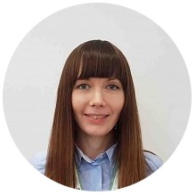

Marina Kovel
Contacts
Summary
I study JavaScript at the Rolling Scopes School and would like to start a career in this area. I currently work as a Senior Marketing Specialist at the LLC "FelOct-service" (SKODA importer in Belarus) in Minsk and I completed my studies at the Belarusian State University in Minsk, Belarus in 2009. I perceive myself as a fast-learner able to take initiative and work independently, but also as an effective team player. I believe I can offer your organization professional commitment and support.
Personal skills
Mother tongues: Russian, Belarusian
Foreign languages:
- English (B2)
- French (B2)
- German (B1)
Digital skills:
- HTML
- CSS
- Git, Github
- Web-administration (different platforms)
Job-related skills:
- Detail-oriented
- Analytical
- Organizational skills
- Eager to learn
- Team Player
- Diligent
Code example
// This is a salutation
let test = "Hello RS School!";
console.log(test);
Project
Education and Training
- 13/03/2022-Present: JavaScript/Front-end; Rolling Scopes School
- 2021: Marketing research. Marketing analytics; Business School IPM, Minsk (Belarus)
- 2019: Project Management; Business School IPM, Minsk (Belarus)
- 2006–2009: Bachelor degree on Economics and Management; Belarusian State University, Minsk (Belarus)
- 2005–2006: Faculté d'Économie et management; Université de Genève, Geneva (Switzerland)
- 2003–2005: Public administration and economics; The Academy of Public Administration under the aegis of the President of the Republic of Belarus, Minsk (Belarus)
Work experience
03/09/2018–Present: Senior Marketing Specialist; FelOct-service, LLC (General SKODA Importer in Belarus), Minsk (Belarus)
- product management of the SKODA model range, requests and communication with SKODA AUTO for the new car equipment
- product trainings for sales and local dealers
- web administration
- car tender response in cooperation with sales (technical specifications)
- project management (e.g. implementation of new web platform, new web services in cooperation with SKODA AUTO)
11/02/2014–02/09/2018: Product Marketing Specialist; FelOct-service, LLC (General SKODA Importer in Belarus), Minsk (Belarus)
- product management of the SKODA model range (communications with SKODA AUTO, determining specifications, production timetables, pricing, and time-integrated plans for product introduction)
- web administration
- product trainings for sales
01/10/2012–12/2013: Senior specialist in marketing of telecommunications services (since May 2013 Acting Head of department); Cosmos TV, LLC, Minsk (Belarus)
- budget planning
- analysis of the dynamics of subscribtions
- monitoring of competitors, marketing research
- recommendations for the purchase of new equipment
- participation in the development of strategies for implementation of new services
- preparation of advertising campaigns
- taking part in the planning of promotional activities, estimation of efficiency of the advertising
01/08/2012–30/09/2012: Advertising Specialist, Marketing; Cosmos TV, LLC, Minsk (Belarus)
- providing advertising and product information for sales and customer service departments
- participation in the preparation of advertising campaigns
- advertising on the website and in social networks
21/11/2011–31/07/2012: Secretary-Assistant to the Executive Director; Cosmos TV, LLC, Minsk (Belarus)
- coordination of office meetings and company conferences, organization of duty travel, managing of schedule of the Director
- procurement as per requirements of the office
- internal documentation flow
16/10/2008–20/11/2011: Customer Service; Cosmos TV, LLC, Minsk (Belarus)
- working with clients in the Call center
- administrative work including drafting correspondence, replying to various queries of clients as well as management, processing contracts